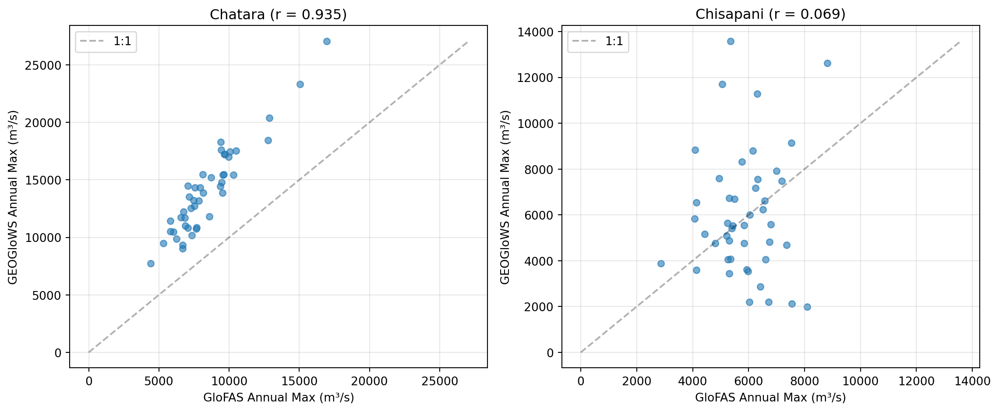

Code
import os
import pandas as pd
import numpy as np
import matplotlib.pyplot as plt
import xarray as xr
from pathlib import Path
from src.constants import STATIONS
DATA_DIR = Path(repo_root) / "data"
AA_DATA_DIR = Path(os.environ["AA_DATA_DIR"])This chapter compares the GEOGloWS retrospective simulation against other available data sources for the same rivers. The goal is to understand how well GEOGloWS captures the timing and magnitude of flood events relative to GloFAS reanalysis, Google GRRR, and DHM observations.
This chapter requires AA_DATA_DIR to be set and pointing to the shared data directory with GloFAS and DHM data. Set eval: true in the code cells below when data is available.
import os
import pandas as pd
import numpy as np
import matplotlib.pyplot as plt
import xarray as xr
from pathlib import Path
from src.constants import STATIONS
DATA_DIR = Path(repo_root) / "data"
AA_DATA_DIR = Path(os.environ["AA_DATA_DIR"])geoglows = {}
for key, station in STATIONS.items():
rid = station.geoglows_river_id
df = pd.read_parquet(DATA_DIR / f"geoglows_retro_daily_{rid}.parquet")
df.columns = ["discharge"]
df.index = df.index.tz_localize(None) # strip UTC for comparison with tz-naive GloFAS
geoglows[key] = df
print("GEOGloWS retrospective loaded:")
for key, df in geoglows.items():
print(f" {STATIONS[key].name}: {len(df)} days, "
f"{df.index.min().date()} to {df.index.max().date()}")GEOGloWS retrospective loaded:
Chatara: 31499 days, 1940-01-01 to 2026-03-28
Chisapani: 31499 days, 1940-01-01 to 2026-03-28glofas_path = (
AA_DATA_DIR / "public" / "processed" / "npl" / "glofas"
/ "npl_cems-glofas-historical_v4.nc"
)
glofas_ds = xr.open_dataset(glofas_path)
glofas_df = glofas_ds.to_dataframe().reset_index()
glofas_df = glofas_df.set_index("time")[["Chatara", "Chisapani"]]
print(f"GloFAS reanalysis: {len(glofas_df)} days, "
f"{glofas_df.index.min().date()} to {glofas_df.index.max().date()}")GloFAS reanalysis: 16436 days, 1979-01-01 to 2023-12-31/var/folders/61/cp06zhcj4y76q7rfx0qlm06c0000gn/T/ipykernel_94743/3832291957.py:5: FutureWarning: In a future version, xarray will not decode the variable 'step' into a timedelta64 dtype based on the presence of a timedelta-like 'units' attribute by default. Instead it will rely on the presence of a timedelta64 'dtype' attribute, which is now xarray's default way of encoding timedelta64 values.
To continue decoding into a timedelta64 dtype, either set `decode_timedelta=True` when opening this dataset, or add the attribute `dtype='timedelta64[ns]'` to this variable on disk.
To opt-in to future behavior, set `decode_timedelta=False`.
glofas_ds = xr.open_dataset(glofas_path)from src.datasources.grrr import process_reanalysis
grrr = {}
for key, station in STATIONS.items():
if station.grrr_gauge_id:
df = process_reanalysis(gauge=station.grrr_gauge_id)
df = df.set_index("valid_time")[["streamflow"]]
grrr[key] = df
print(f"GRRR {station.name}: {len(df)} days, "
f"{df.index.min().date()} to {df.index.max().date()}")GRRR Chatara: 16063 days, 1980-01-01 to 2023-12-23
GRRR Chisapani: 16063 days, 1980-01-01 to 2023-12-23fig, axes = plt.subplots(2, 1, figsize=(14, 8), sharex=False)
for i, (key, station) in enumerate(STATIONS.items()):
ax = axes[i]
# GEOGloWS
geo = geoglows[key]
ax.plot(geo.index, geo["discharge"],
color="#888888", alpha=0.5, linewidth=0.3, label="GEOGloWS")
# GloFAS
gf = glofas_df[station.dhm_column]
ax.plot(gf.index, gf.values,
color="#1f77b4", alpha=0.7, linewidth=0.3, label="GloFAS")
# GRRR
if key in grrr:
gr = grrr[key]
ax.plot(gr.index, gr["streamflow"],
color="#2ca02c", alpha=0.7, linewidth=0.3, label="GRRR")
# Return period lines
ax.axhline(station.glofas_rp2, color="#d62728", linestyle="--",
alpha=0.5, label=f"GloFAS RP2 ({station.glofas_rp2:,})")
ax.set_ylabel("Discharge (m³/s)")
ax.set_title(station.name)
ax.legend(loc="upper left", fontsize=8)
ax.grid(True, alpha=0.2)
plt.tight_layout()
plt.show()
fig, axes = plt.subplots(2, 1, figsize=(14, 8))
for i, (key, station) in enumerate(STATIONS.items()):
ax = axes[i]
# Trim GEOGloWS to GloFAS period
geo = geoglows[key]
geo_overlap = geo[
(geo.index >= glofas_df.index.min())
& (geo.index <= glofas_df.index.max())
]
ax.plot(geo_overlap.index, geo_overlap["discharge"],
color="#ff7f0e", alpha=0.6, linewidth=0.4, label="GEOGloWS")
gf = glofas_df[station.dhm_column]
ax.plot(gf.index, gf.values,
color="#1f77b4", alpha=0.6, linewidth=0.4, label="GloFAS")
ax.set_ylabel("Discharge (m³/s)")
ax.set_title(f"{station.name} — Overlapping Period")
ax.legend(fontsize=8)
ax.grid(True, alpha=0.2)
plt.tight_layout()
plt.show()
fig, axes = plt.subplots(1, 2, figsize=(12, 5))
for ax, (key, station) in zip(axes, STATIONS.items()):
# GEOGloWS annual maxima
geo = geoglows[key]
geo_annual = geo.groupby(geo.index.year)["discharge"].max()
# GloFAS annual maxima
gf = glofas_df[station.dhm_column]
gf_annual = gf.groupby(gf.index.year).max()
# Overlapping years
common_years = geo_annual.index.intersection(gf_annual.index)
geo_common = geo_annual.loc[common_years]
gf_common = gf_annual.loc[common_years]
ax.scatter(gf_common, geo_common, alpha=0.6, s=30)
# 1:1 line
max_val = max(gf_common.max(), geo_common.max())
ax.plot([0, max_val], [0, max_val], "k--", alpha=0.3, label="1:1")
# Correlation
corr = np.corrcoef(gf_common.values, geo_common.values)[0, 1]
ax.set_xlabel("GloFAS Annual Max (m³/s)")
ax.set_ylabel("GEOGloWS Annual Max (m³/s)")
ax.set_title(f"{station.name} (r = {corr:.3f})")
ax.legend()
ax.grid(True, alpha=0.3)
plt.tight_layout()
plt.show()
fig, axes = plt.subplots(1, 2, figsize=(12, 5))
for ax, (key, station) in zip(axes, STATIONS.items()):
geo = geoglows[key]
geo_monthly = geo.groupby(geo.index.month)["discharge"].mean()
gf = glofas_df[station.dhm_column]
gf_monthly = gf.groupby(gf.index.month).mean()
months = range(1, 13)
ax.plot(months, geo_monthly.values, "o-", label="GEOGloWS")
ax.plot(months, gf_monthly.values, "s-", label="GloFAS")
if key in grrr:
gr = grrr[key]
gr_monthly = gr.groupby(gr.index.month)["streamflow"].mean()
ax.plot(months, gr_monthly.values, "^-", label="GRRR")
ax.set_xlabel("Month")
ax.set_ylabel("Mean Discharge (m³/s)")
ax.set_title(station.name)
ax.legend()
ax.grid(True, alpha=0.3)
ax.set_xticks(months)
plt.tight_layout()
plt.show()
rows = []
for key, station in STATIONS.items():
geo = geoglows[key]["discharge"]
gf = glofas_df[station.dhm_column]
# Overlapping period stats
common_start = max(geo.index.min(), gf.index.min())
common_end = min(geo.index.max(), gf.index.max())
geo_o = geo[(geo.index >= common_start) & (geo.index <= common_end)]
gf_o = gf[(gf.index >= common_start) & (gf.index <= common_end)]
rows.append({
"Station": station.name,
"Source": "GEOGloWS",
"Period": f"{geo.index.min().year}–{geo.index.max().year}",
"Mean (m³/s)": f"{geo.mean():,.0f}",
"Max (m³/s)": f"{geo.max():,.0f}",
"Overlap Mean": f"{geo_o.mean():,.0f}",
})
rows.append({
"Station": station.name,
"Source": "GloFAS",
"Period": f"{gf.index.min().year}–{gf.index.max().year}",
"Mean (m³/s)": f"{gf.mean():,.0f}",
"Max (m³/s)": f"{gf.max():,.0f}",
"Overlap Mean": f"{gf_o.mean():,.0f}",
})
pd.DataFrame(rows)| Station | Source | Period | Mean (m³/s) | Max (m³/s) | Overlap Mean | |
|---|---|---|---|---|---|---|
| 0 | Chatara | GEOGloWS | 1940–2026 | 2,258 | 27,064 | 2,180 |
| 1 | Chatara | GloFAS | 1979–2023 | 1,730 | 16,951 | 1,730 |
| 2 | Chisapani | GEOGloWS | 1940–2026 | 431 | 15,335 | 356 |
| 3 | Chisapani | GloFAS | 1979–2023 | 1,291 | 8,816 | 1,291 |